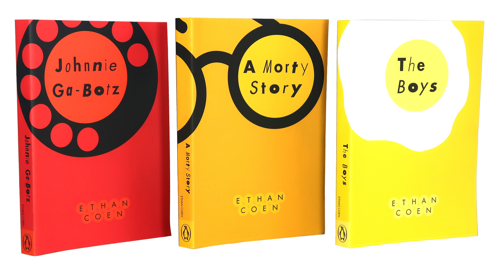
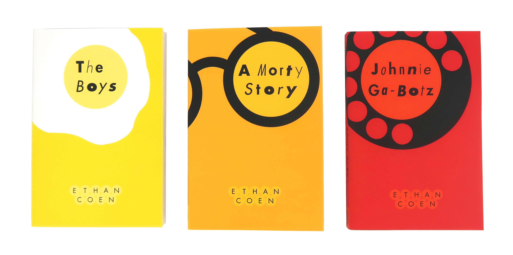
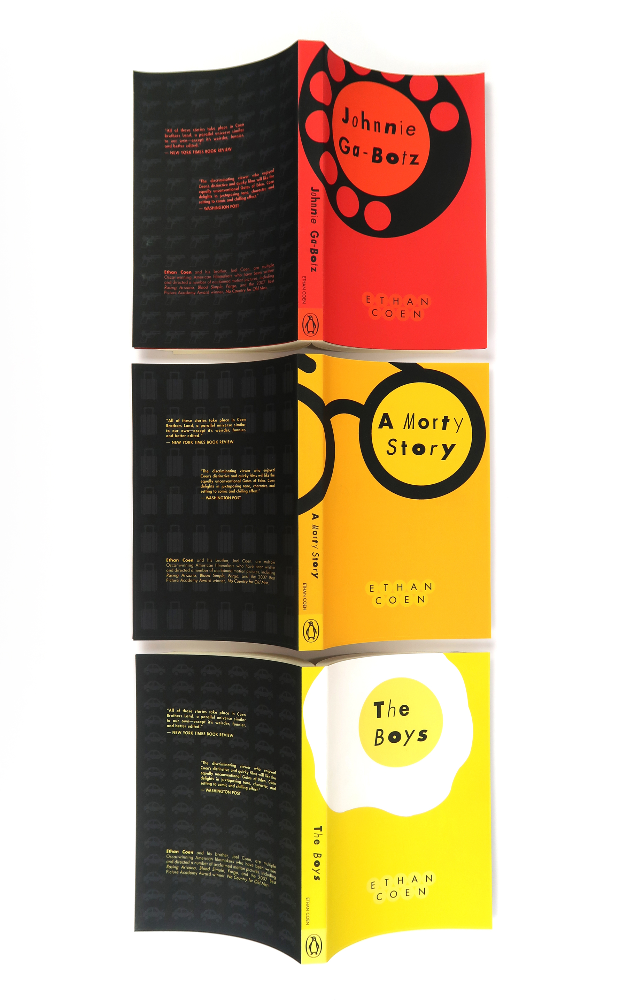
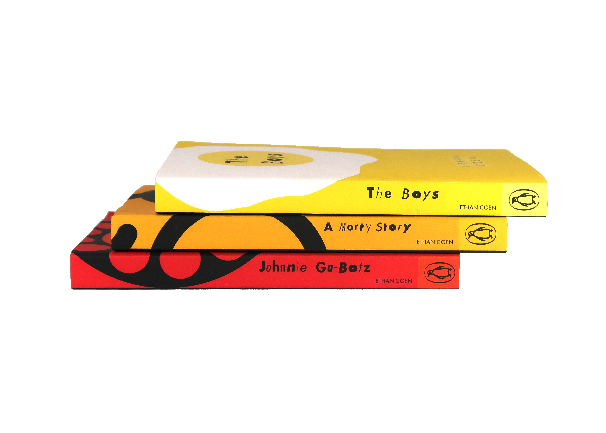

How do you fit a Coen Brothers’ 'wild ride' into a perfect circle?
Full Circle:
A Coen Brothers-Inspired Design Experiment
When the mind behind Fargo and No Country for Old Men writes short stories, you know it’s going to be a wild ride. I took on Ethan Coen’s Gates of Eden and gave it a fresh, geometric look.
Why circles? Because in these stories, everything eventually comes back around—usually in the weirdest way possible. I used circular shapes as the "DNA" for Johnnie Ga-botz, A Morty Story, and The Boys, creating a unified look for a very diverse set of characters. And if you flip the book over? You’ll find a hidden world of patterns and symbols that complete the story. It’s professional design with a cinematic twist.


